From 1 to 1,000,000
November 14, 2014 — By Tim Urban
Look. I don’t know what you’re over there thinking about. It could be simple or sophisticated, mundane or whimsical, practical or creepy.
But I’m over here thinking about numbers. Again.
I’ve never been especially impressed by words. They’re mushy and sometimes pleasant and sometimes annoying. They’re subtle and subjective and rambly and flowy. Words are okay. Whatever.
But numbers. Numbers are fascinating and precise and satisfying and delicious and whatever it is you’re thinking about at any given time, there’s at least a 60% chance that I’m over here thinking about numbers.
So I’ve decided to do not one, but two consecutive posts on numbers, during which we’ll start at 1 and end up in a very scary place. Today, we’ll keep things in the realm of the ordinary and the conceivable, capping ourselves at a million.
The numbers between 1 and 1,000,000 are everywhere in daily life. 1, 10, 100, 1,000, 10,000, and 100,000 are our friends—we get them, they get us, and in this post, we’re basically gonna just hang out with them and catch up, since you probably haven’t been good at keeping in touch.
Let’s start at the beginning—
One-Digit Numbers
We’ll lead off with the extraordinarily dull 1.
1 likes to masquerade as this poetic and profound thing, getting used in sentences I don’t really understand, like “the oneness of all” or something annoying like that. But then anytime you actually spend time with 1, you end up bored.
1 is also no fun to play with. Multiplying or dividing things by it is an incredibly underwhelming experience, and it manages to be such a dud that somehow, it’s not a prime number even though it only has one factor.
As for the rest of the one-digit numbers, I enjoy 2, 4, and 8 because when I was seven I became obsessed with saying “2, 4, 8, 16, 32, 64, 128, 256, 512, 1,024, 2,048, 4,096” before hitting a wall,1 and I have an affinity for prime numbers, naturally, so 3, 5, and 7 fall into my favor. Not thrilled with 9, but at least it’s a perfect square. The only thing 6 offers my life is annoying the shit out of me every time I have to tell someone my phone number—(xxx)-666-xxxx—and they can’t help but have some reaction to that and then we end up in this little song-and-dance interaction about it.2
Let’s move on.
Two-Digit Numbers
Getting to the two-digit numbers, interesting things finally start happening. 10 itself is a big one, because our entire base ten existence stems from it. Why did we end up in base ten (instead of something like base 8, which would go 1, 2, 3, 4, 5, 6, 7, 10, 11, 12, 13, 14, 15, 16, 17, 20, etc.)? Because we have 10 fingers. It seems intuitive that only with base 10 could you multiply and divide so easily and simply add zeros or move a decimal point when shifting by multiples of 10, but that would be the case with any number system.3 Let’s look at some bigger numbers—
12 has the dozen thing going which is something, as well as factors up the dick. It’s also the number of people who have been on the moon.
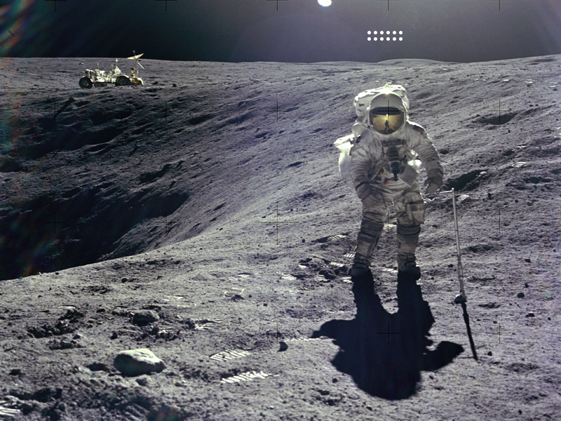
Let’s pause for a second to acknowledge how ridiculously impressive it is that humans got humans onto the moon and safely back. And how lucky are those 12 guys? Could any life experience be more desirable than getting to bounce around the moon while looking at the Earth hovering out there in space?
Continuing along, I don’t know whose sister 13 slept with, but somewhere along the way it pissed off the wrong person and managed to become the only number with a legitimately bad reputation.
20’s worth mentioning just because I read during my research that only about 1 in 20 men in the US is 6’2″ or taller. So if you’re 6’2″ or taller, you’re the tallest of this average sampling of 20 American men—4
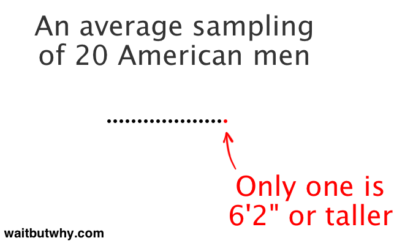
33 is relevant because of Larry Bird and because that’s what I turned on Wednesday thanks for wishing me a happy birthday none of you.
You might be surprised to know that only 1/43 Americans openly identifies as gay, lesbian, or bisexual, but that when asked in an anonymous and veiled survey, that number jumps to 8/43:
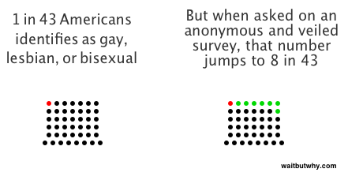
There are 41 Disney princesses and 48 real-life princesses, none of whom is Kate Middleton.
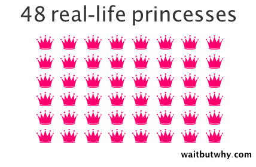
Not much else happening with the two-digit numbers until we arrive at sleazy 99, the price tag whore who’s made its whole living being the guy next to 100.
Three-Digit Numbers

100 is a big deal and clearly knows it, but that’s fair. It’s the first three-digit number, but in our world, 100’s main role is being the overlord of the one and two-digit groups—it’s a century of years, the official “okay you win” age to reach, and the whole concept of percent is just comparing a part of 100 to all of 100. 100 is also a perfect square of another one of these fundamental numbers (i.e. 10, 100, 1,000, etc.), which is satisfying.
Being in the top 100th of a group in some way is also a thing. It looks like this:
If you’re in the red dot when it comes to wealth, you’re the notorious 1 percent and a lot of people will make signs that are mean to you. To be in the red dot among Americans, you need to make almost $400,000/year, but only about a tenth of that ($39,000 in 2011) to be in the red dot worldwide.
On the SAT, you’d be the red dot if you scored a 1480 out of 1600 or a 2200 out of 2400, and on the ACT, you’d need a 33. A Stanford-Binet IQ of 137 will make you the red dot too and would mean 99% of people are stupider than you.5
After 100, we’re about to get into superbly random number territory, but first we hit 101, a C-list number celebrity for a handful of small claims to fame, like 101 Dalmations and beginner courses and the West Coast US highway.
Continuing along, while about exactly 1 out of every 100 dots speaks sign language (70 million people worldwide),6 1 of every 179 living humans (39 million) is blind:
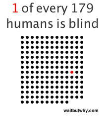
There are 444 Apple retail stores in the world:
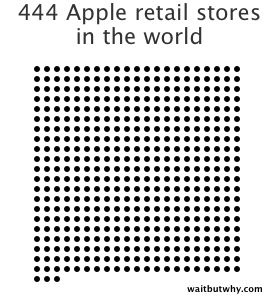
If you deal five cards 508 times, you’ll average one flush:
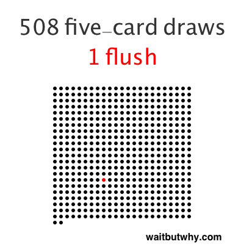
And there are 12 million US dollar millionaires in the world, or 1 out of every 583 people. If your total assets (in excess of your total liabilities) add up to over $1,000,000, you’re the red dot in this diagram:
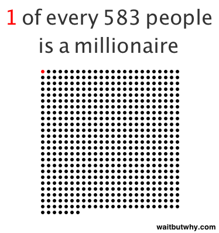
Four Digit Numbers
1,000 is also a huge deal in our world and has a bunch of nicknames, like a grand, a G, a kilo, and k. It’s also part of the elite chain of numbers in the “order-of-magnitude” chain, which we know as million, billion, trillion, etc. Million is actually the third number in that chain, with the dud 1 as the first number and 1,000 as the second number. And 1,000 is the key multiplier that defines the whole chain.
That said, 1,000’s dirty secret is that it’s a fraud like 10 and can’t be made into a square. The square root of 1,000 is an embarrassing 31.62277660168 etcetera without even a vinculum.7
Anyway, let’s look at some four-digit numbers and odds:
Here’s how many times a neutron star spins around every second:
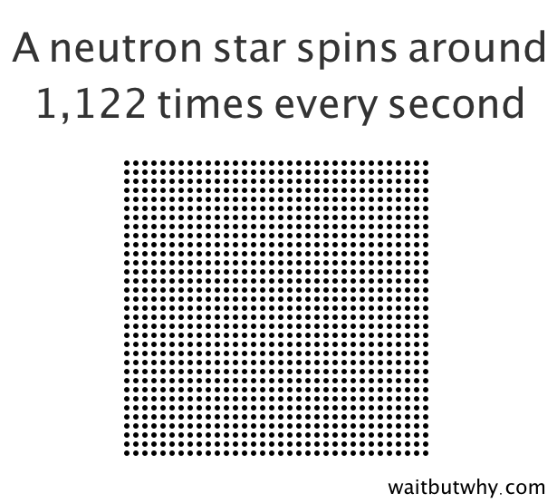
And here’s how many minutes there are in each day:
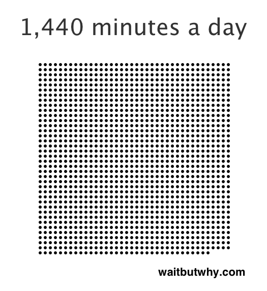
A genius-level IQ of 150 will earn you red dot status on the thousand-dot intelligence diagram, but that doesn’t mean you got a perfect 1600 on the SAT—only the red dot in a 1,489-dot sample aces the SAT:
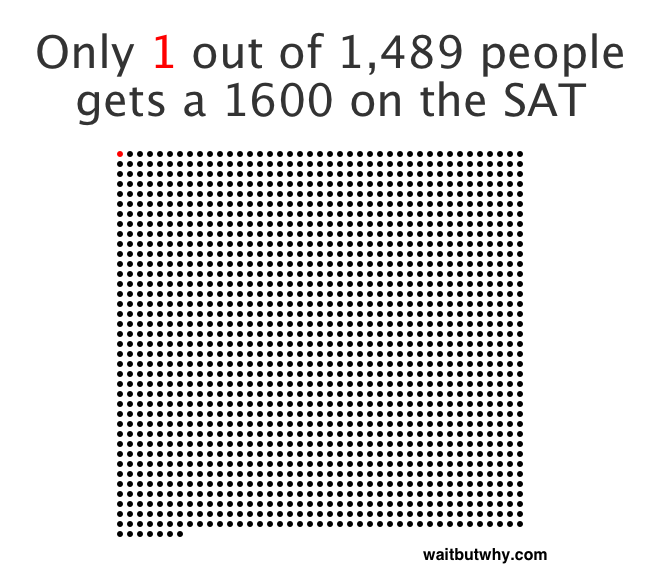
There are 1,811 large US corporations (over 10,000 employees), and astronomers have identified 1,849 planets outside our solar system:
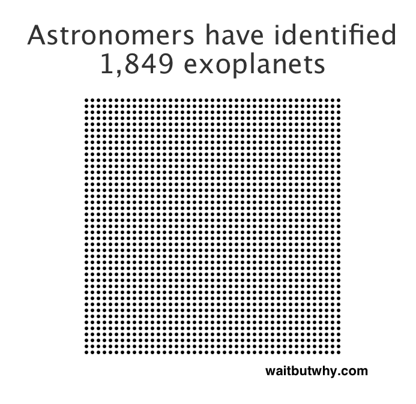
On a perfectly clear night, we can see about 2,500 stars in the night sky:
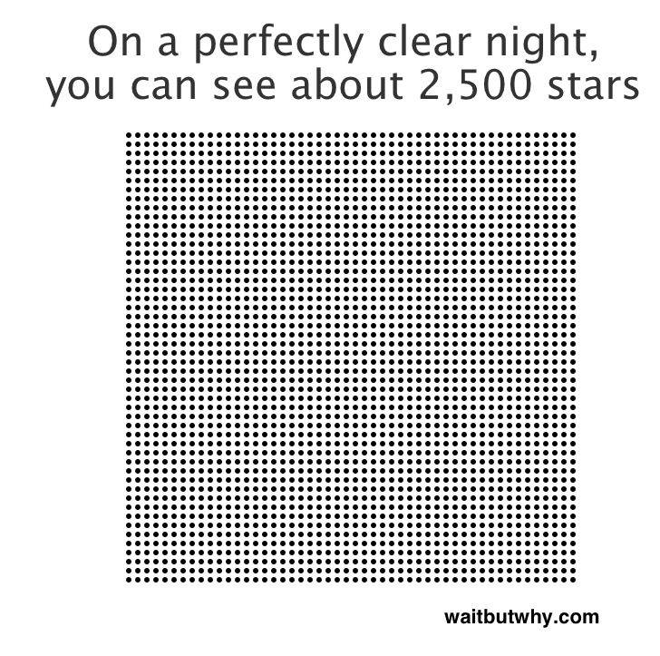
And there may be only 2,800 living people over 7 feet tall (213cm), but they each have a 17% chance of making the NBA.
Here are all the seconds in an hour:
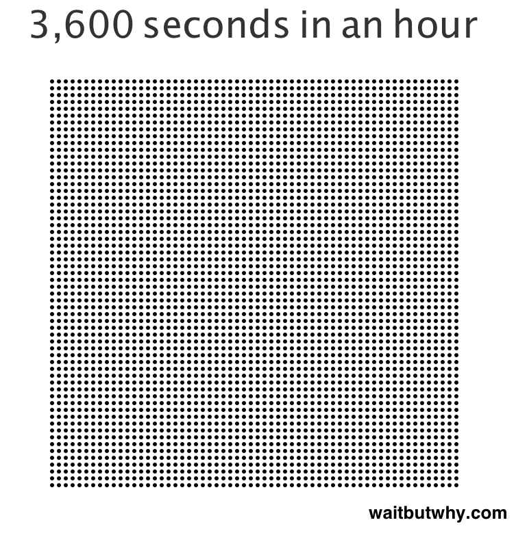
And here’s the number of religions in the world:
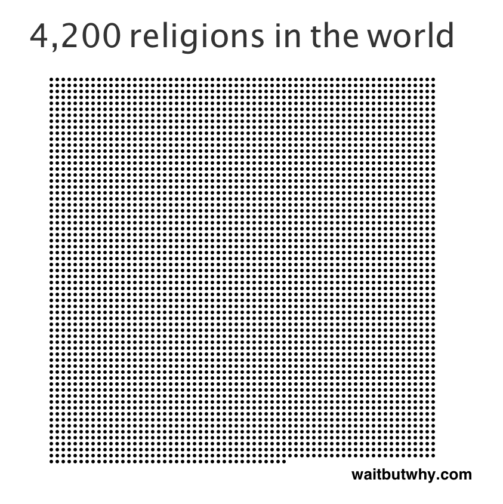
So there are more religions than the stars we see in the night sky, and you could name a religion every second and it would take you over an hour to name them all.
We’ve identified over 400,000 species of beetle in the world, but only 5,416 mammal species.
And here’s how many living languages there are in the world:
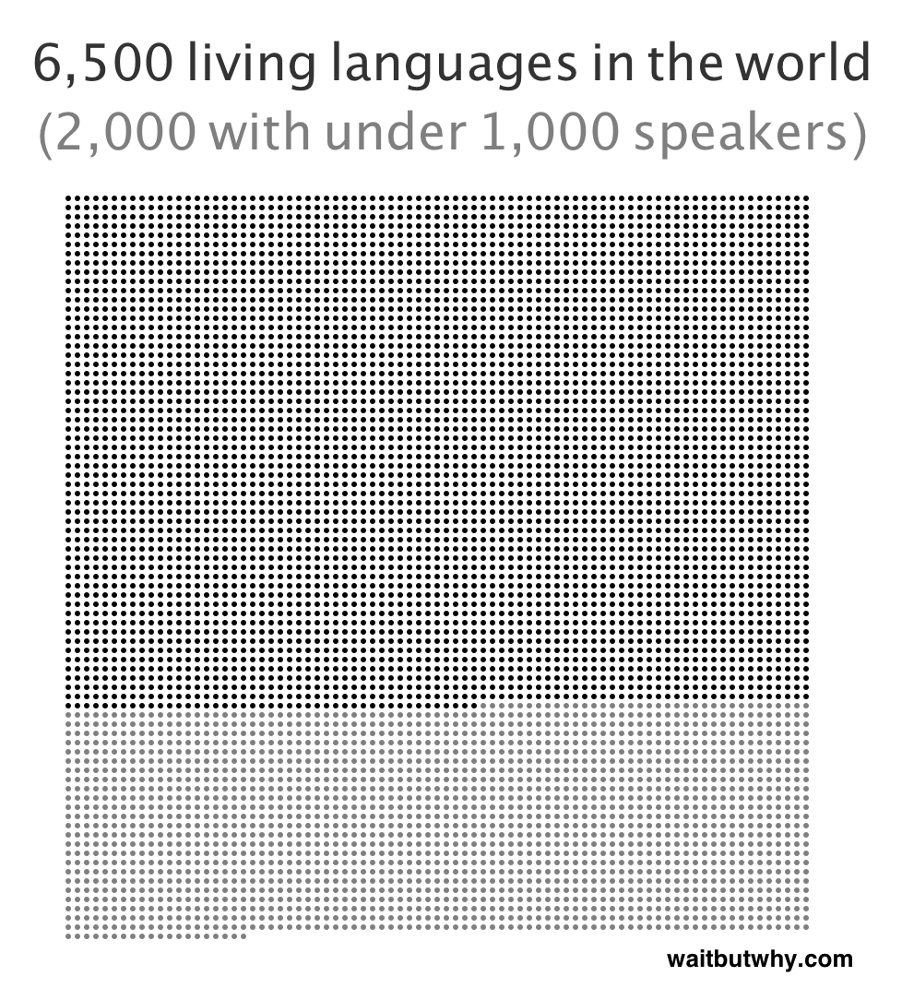
Finally, this is how many medium-sized (.5mm in diameter) grains of sand you could fit in a cubic centimeter box:
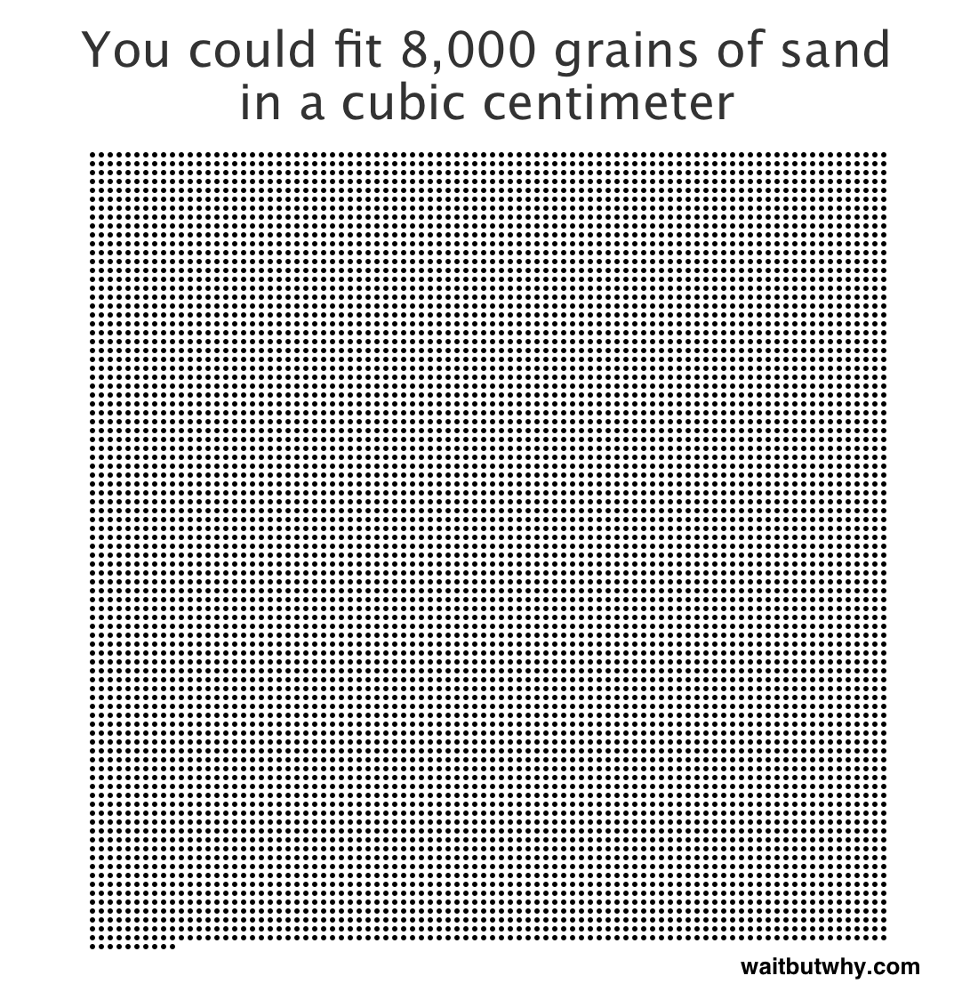
Five-Digit Numbers
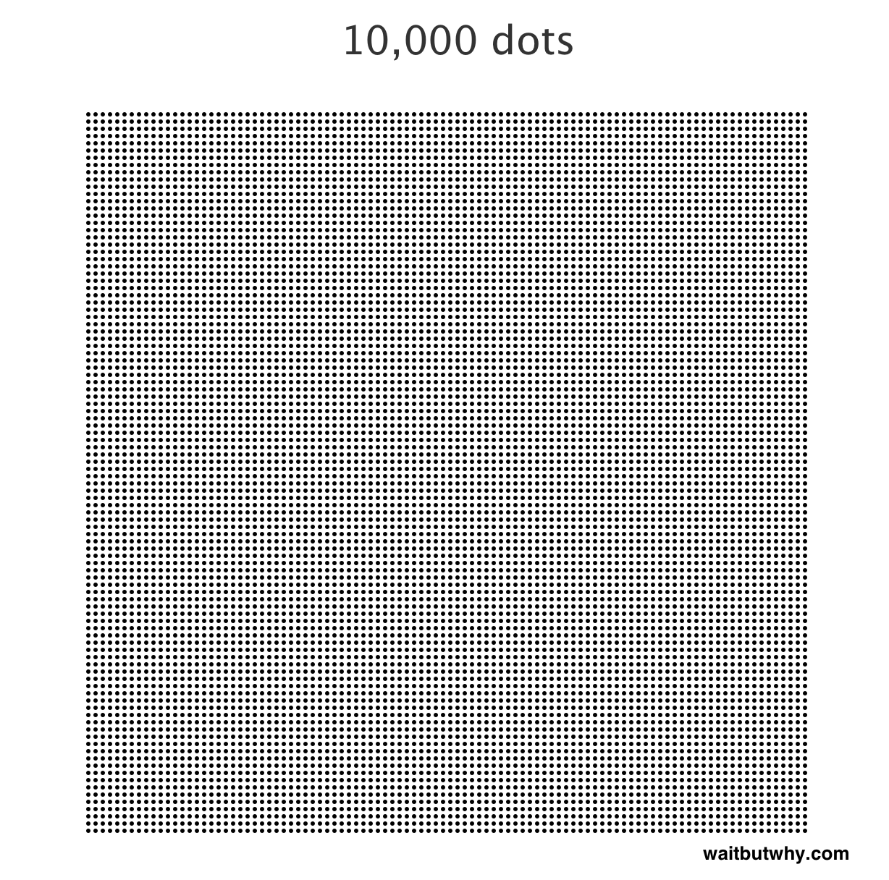
If 1,000 is a little overrated, 10,000 is underrated. No one talks about 10,000, but unlike the square rootless 1,000, 10,000 a perfect square of 100 100s, and 1% of a million.
Stephen Hawking’s IQ is supposedly 160, which would just qualify him to be the red dot in a 10,000 dot average sample of human intelligence. And just so you know, in an average group of 17,000 people, one will be an albino.
This is how many people fit in a sold-out Fenway Park:
Larger than the number of people in Fenway are both the 41,821 airports in the world and the number of buildings in Manhattan:
The 55,030 Google employees would fill up a large stadium, as would Apple’s 50,250. Facebook is considerably smaller, with a staff of 8,348, while Wikipedia is running with only 208 people. You could fit the Craigslist team in a small bus:
And here’s how many seconds tick by every day:
Six-Digit Numbers

100,000 is the most random main category number of this post. In life, it mostly comes up as a salary most people would really like to be making. It’s also getting very close to the largest number of people I can actually picture all together in one place. Michigan Stadium (The Big House) is just under 110,000, and the largest stadium in the world is India’s Salt Lake Stadium, with a capacity of 120,000. North Korea claims that its Rungnado May First Stadium holds 150,000 people, but North Korea also says that Kim Jong Il shot 11 holes-in-one on his first time trying golf so we’ll be sticking with Salt Lake Stadium as the world’s largest.8
Equal to the capacity of the world’s largest stadium is the number of abortions that happen in the world every day, on average:
That’s about 1/3 the amount of worldwide births per day, meaning a quarter of all pregnancies that don’t end in miscarriage end in abortion. That’s about the same as the rate in the US, but in New York City, 41 of every 100 non-miscarried pregnancies are aborted. And no, this isn’t meant to be a political statement of any kind, just an interesting (and to me, surprising) statistic, so just settle down.
One Million
Good luck. See you at the bottom—
Sorry. A million dots is a lot of dots.
And how small are one-in-a-million odds? How much of a long shot is one-in-a-million? Just try to find the red dot in the million dots above.
This image is the only way I can think of to visualize what a million or what one-in-a million actually means.
A million is interesting because it’s huge—but it’s also the smallest of the big boys, just small enough that you can still picture it or depict it on a diagram. It’s right on the border between the world we can wrap our heads around and the world of the totally inconceivable.
That red dot, if you found it, is a good thing to keep in mind next time you buy a 1-in-146 million Powerball ticket, or anytime you hear facts like one out of every 11 million airplane flights crashes. A one-in-a-million long shot is the same as rolling three 100-sided dice and trying to hit the number 63 with all three of them in one roll.
If you want to play around with taking a one-in-a-million shot at something, pick a number between 1 and 1,000,000, say it out loud, and then click Generate below and try to hit it (or two other ways to do it: 1) Change the max number to 1,000 and try to hit the number you say with the next two clicks; 2) Change the max number to 100 and try to hit a chosen number three times in a row):
The Million-Dot Poster
I like both the number 1,000,000 and the number 1/1,000,000, and I love any chance to visualize them. A blog post that can only fit 200 dots horizontally isn’t an ideal way to visualize a million because it makes a 1 x 25 rectangle you have to scroll down for an hour to see all of. So we’ve made a million-dot poster.
The poster is, satisfyingly, a square. A 24″ x 24″ (61cm x 61cm) poster with a 1,000 dot x 1,000 dot square of a million total dots. This allows you to most effectively visualize the number one million (it also helps to visualize 5 or 10 or 100 million, or even a billion, by picturing multiple posters next to each other).
And, of course, one of the dots is red. It takes a hunt to find it,9 but once you do, you can understand exactly what 1/1,000,000 means. So one poster, two extreme numbers to visualize. You can check it out here.
Here’s what the plain one looks like:
Full poster:
A closer shot, showing the red dot in the middle:

And a close-up shot, showing the red dot:

From 1,000,000 to Graham’s Number
November 20, 2014 — By Tim Urban
Welcome to numbers post #2.
Last week, we started at 1 and slowly and steadily worked our way up to 1,000,000. We used dots. It was cute.
Well fun time’s over. Today, shit gets real.
Before things get totally out of hand, let’s start by working our way up the still-fathomable powers of 10—
Powers of 10
When we went from 1 to 1,000,000, we didn’t need powers—we could just use a short string of digits to represent the numbers we were talking about. If we wanted to multiply a number by 10, we just added a zero.
But as you advance past a million, zeros start to become plentiful and you need a different notation. That’s why we use powers. When people talk about exponential growth, they’re referring to the craziness that can happen when you start using powers. For example:
If you multiply 9,845,625,675,438 by 8,372,745,993,275, the result is still smaller than 829.
As we get bigger and bigger today, we’ll stick with powers of 10, because when you start talking about really big numbers, what becomes relevant is the number of digits, not the digits themselves—i.e. every 70-digit number is somewhere between 1069 and 1070, which is really all you need to know. So for at least the first part of this post, the powers of 10 can serve nicely as orders-of-magnitude “checkpoints”.
Each time we up the power by one, we multiply the world we’re in by ten, changing things significantly. Let’s start off where we left off last time—
106 (1 million – 1,000,000) – The amount of dots in that huge image we finished up with last week. On my computer screen, that image was about 18cm x 450cm = .81 m2 in area.
107 (10 million) – This brings us to a range that includes the number of steps it would take to walk around the Earth (40 million steps). If each of your steps around the Earth were represented by a dot like those from the grids in the last post, the dots would fill a 6m x 6m square.
108 (100 million) – Now we’re at the number of books ever published in human history (130 million), and at the top of this range, the estimated number of words a human being speaks in a lifetime (860 million). Also in this range are the odds of winning the really big lotteries. A recent Mega Millions lottery had 1-in-175,711,536 odds of winning. To put those chances in perspective, that’s about the number of seconds in six years. So it’s like knowing a hedgehog will sneeze once and only once in the next six years and putting your hard-earned money down on one particular second—say, the 36th second of 2:52am on March 19th, 2017—and only winning if the one sneeze happens exactly at that second. Don’t buy a Mega Millions ticket.
109 (1 billion1 – 1,000,000,000) – Here we have the number of seconds in a century (about 3 billion), the number of living humans (7.125 billion), and to fit a billion dots, our dot image would cover two basketball courts.
1010 (10 billion) – Now we’re up to the years since the Big Bang (13.7 billion) and the number of seconds since Jesus Christ lived (60 billion).
1011 (100 billion) – This is about the number of stars in the Milky Way and the number of galaxies in the observable universe (100-400 billion)—so if a computer listed one observable galaxy every second since Christ, it wouldn’t be anywhere close to finished currently.
1012 (1 trillion – 1,000,000,000,000) – A million millions. The amount of pounds the scale would show if you put the whole human race on it (~1 trillion), the number of seconds humans have been around (~100,000 years = ~3 trillion seconds), and larger than both of those totals combined, the number of miles in one light year (6 trillion). A trillion is so big that you’d only need 4 trillion millimeters of ribbon to tie a bow around the sun.
1013 (10 trillion) – This is about as big as we can get for numbers we hear discussed in the real world, and it’s almost always related to nations and dollars—the US nominal GDP in 2013 was just under $17 trillion, and its debt is currently just under $18 trillion. Both of those are dwarfed by the number of cells in the human body (37 trillion).
1014 (100 trillion) – 100 trillion is about the number of letters in every published book in human history, as well as the number of bacteria in your body.2 Also in this range is the total wealth of the world ($241 trillion, which we discussed at great length in a previous post).
1015 (1 quadrillion) – Okay goodbye normal words. People say the words million, billion, and trillion a lot. No one says quadrillion. It’s really uncool to say the word quadrillion.3 Most people opt for “a million billion” instead. Either way, there are about a quadrillion ants on Earth. Comparing this to the bacteria fact, it’s like you have 1/10th of the world’s ants crawling around inside your body.
1016 (10 quadrillion) – It’s in this range that we get to the number of playing cards you’d have to accidentally knock off the table to cover the entire Earth (89 quadrillion). People would be mad at you.
1017 (100 quadrillion) – The number of seconds since the Big Bang. Also the number of references to Kim Kardashian that entered my soundscape in the last week. Please stop.
1018 (1 quintillion) – Also known as a billion billion, the word quintillion manages to be even less cool than a quadrillion. No one who has social skills ever says the word quintillion. Anyway, it’s the number of cubic meters of water in all the Earth’s oceans and the number of atoms in a grain of salt (1.2 quintillion). The number of grains of sand on every beach on Earth is about 7.5 quintillion—the same number of atoms in six grains of salt.
1019 (10 quintillion) – The number of millimeters from here to the closest next star (38 quintillion millimeters).
1020 (100 quintillion) – The number of meter-long steps it would take you to walk across the whole Milky Way. So many podcasts. And heard of a Planck volume? It’s the smallest volume scientists talk about, so small you could fit 100 quintillion of them in a proton. More on Planck volumes later. Oh, and our dot image? By the time we get to 600 quintillion dots, the image would cover the surface of the Earth.
1021 (1 sextillion) – Now we’re even beyond the vocabulary of the weirdos. I don’t think I’ve ever heard someone say “sextillion” out loud, and I hope to keep it that way.
1023 (100 sextillion) – A rough estimate for the number of stars in the observable universe. You also had to deal with this number in high school—602 sextillion, or 6.02 x 1023—is a mole, or Avogadro’s Number, and the number of hydrogen atoms in a gram of hydrogen.
1024 (1 septillion) – A trillion trillions. The Earth weighs about six septillion kilograms.
1025 (10 septillion) – The number of drops of water in all the world’s oceans.
1027 (1 octillion) – If the Earth were hollow, it would take 1 octillion peas to pack it full. And I think we’ve heard just about enough from octillion.
Okay so now let’s take a huge leap forward into a whole different territory—somewhere where the Earth’s volume is too tiny and the Big Bang too recent to use in examples. In this new arena of number, only the observable universe—a sphere about 92 billion light years across—can handle the magnitude we’re dealing with.4
1080 – To get to 1080, you take trillion and you multiply it by a trillion, by a trillion, by a trillion, by a trillion, by a trillion, by a hundred million. No dot posters being sold for this number. So why did I stop here at this number? Because it’s a common estimate for the number of atoms in the universe.
1086 – And what if you wanted to pack the entire observable universe sphere with peas? You’d need 1086 peas to make it happen.
1090 – This is how many medium size grains of sand (.5mm in diameter) it would take to pack the universe full.
A Googol – 10100
The name googol came about when American mathematician Edward Kasner got cute one day in 1938 and asked his 9-year-old nephew Milton to come up with a name for 10100—1 with 100 zeros. Milton, being an inane 9-year-old, suggested “googol.” Kasner apparently decided this was a reasonable answer, ran with it, and that was that.5
So how big is a googol?
It’s the number of grains of sand that could fit in the universe, times 10 billion. So picture the universe jam-packed with small grains of sand—for tens of billions of light years above the Earth, below it, in front of it, behind it, just sand. Endless sand. You could fly a plane for trillions of years in any direction at full speed through it, and you’d never get to the end of the sand. Lots and lots and lots of sand.
Now imagine that you stop the plane at some point, reach out the window, and grab one grain of sand to look at under a powerful microscope—and what you see is that it’s actually not a single grain, but 10 billion microscopic grains wrapped in a membrane, all of which together is the size of a normal grain of sand. If that were the case for every single grain of sand in this hypothetical—if each were actually a bundle of 10 billion tinier grains—the total number of those microscopic grains would be a googol.
We’re running out of room here on both the small and big end of things to fit these numbers into the physical world, but three more for you:
10113 – The number of hydrogen atoms it would take to pack the universe full of them.
10122 – The number of protons you could fit in the universe.
10185 – Back to the Planck volume (the smallest volume I’ve ever heard discussed in science). How many of these smallest things could you fit in the very biggest thing, the observable universe? 10185. Without being able to go smaller or bigger on either end, we’ve reached the largest number where the physical world can be used to visualize it.
A Googolplex – 10googol
After popularizing the newly-named googol, Krasner could barely keep his pants on with this adorable new schtick and asked his nephew to coin another term. He could barely finish the question before Milton opened his un-nuanced mouth and declared the number googolplex, which he, in typical Milton form, described as “one, followed by writing zeroes until you get tired.”6 At this, Krasner showed some uncharacteristic restraint, ignoring Milton and giving the number an actual definition: 10googol or 1 with a googol zeros written after it. With its full written-out exponent, a googolplex looks like this:
1010,000,000,000,000,000,000,000,000,000,000,000,000,000,000,000,000,000,000,000,000,000,000,000,000,000,000,000,000,000,000,000,000,000
So a googol is 1 with just 100 zeros after it, which is a number 10 billion times bigger than the grains of sand that would fill the universe. Can you possibly imagine what kind of number is produced when you put a googol zeros after the 1?
There’s no possible way to wrap your head around that number—the best we can do is try to understand how long it would take to write the number. What I wrote above is just the exponent—actually writing a googolplex out involves writing a googol zeros. First, let’s figure out where we’d write these zeros.
As we’ve discussed, filling the universe with sand only gets you a ten billionth of the way to a googol, so what we’d have to do is fill the universe to the brim with sand, get a very tiny pen, and write 10 billion zeros on each grain of sand. If you did this and then looked at a completed grain under a microscope, you’d see it covered with 10 billion microscopic zeros. If you did that on every single grain of sand filling the universe, you’d have successfully written down the number googolplex.
And just how long would it take to do that?
Well I just tested how fast a human can reasonably write zeros, and I wrote 36 zeros in 10 seconds.7 At that rate, if from the age of 5 to the age of 85, all I did for 16 hours a day, every single day, was write zeros at that rate, I’d finish one half of a grain of sand in my lifetime. You’d need to dedicate two full human lives to finish one grain of sand. About 107 billion human beings have ever lived in the history of the species. If every single human dedicated every waking moment of their lives to writing zeros on grains of sand, as a species we’d have by now filled a cube with a side of 1.7m—about the height of a human—with completed sand grains. That’s it.
Now to get a glimpse at how big the actual number is—as the Numberphilers explain, the total possible quantum states that could occur in the space occupied by a human (i.e. every possible arrangement of atoms that could happen in that space) is far less than a googolplex. What this means is that if there were a universe with a volume of a googolplex cubic meters (an extraordinarily large space), random probability suggests that there would be exact copies of you in that universe. Why? Because every possible arrangement of matter in a human-sized space would likely occur many, many times in a space that vast, meaning everything that could possibly exist would exist—including you. Including you with cat whiskers but normal otherwise. Including you but a one-foot tall version. Including you exactly how you are except instead of a pinky finger on your left hand you have Napoleon’s penis there as your fifth finger. What I’m saying isn’t science fiction—it’s the reality of a space that large.
Graham’s Number
You know how sometimes you go through life, and you’re lost but you don’t even know it, and then one day, the right person comes along and you realize what you had been looking for this whole time?
That’s how I feel about Graham’s number.
Huge numbers have always both tantalized me and given me nightmares, and until I learned about Graham’s number, I thought the biggest numbers a human could ever conceive of were things like “A googolplex to the googolplexth power,” which would blow my mind when I thought about it. But when I learned about Graham’s number, I realized that not only had I not scratched the surface of a truly huge number, I had been incapable of doing so—I didn’t have the tools. And now that I’ve gained those tools (and you will too today), a googolplex to the googolplexth power sounds like a kid saying “100 plus 100!” when asked to say the biggest number he could think of.
Before we dive in, why is Graham’s number even a number people talk about?
I’m not gonna really explain this because the explanation is really boring and confusing—here’s the official problem Ronald Graham (a living American mathematician) was working on when he came up with it:
Connect each pair of geometric vertices of an n-dimensional hypercube to obtain a complete graph on 2n vertices. Color each of the edges of this graph either red or blue. What is the smallest value of n for which every such coloring contains at least one single-colored complete subgraph on four coplanar vertices?
I told you it was boring and confusing. Anyway, there’s no single answer to the problem, but Graham’s proof includes a lower and upper bound, and Graham’s number was one version of an upper bound for n that Graham came up with.
He came up with the number in 1977, and it gained recognition when a colleague wrote about it in Scientific American and called it “a bound so vast that it holds the record for the largest number ever used in a serious mathematical proof.” The number ended up in the Guinness Book of World Records in 1980 for the same reason, and though it has today been surpassed, it’s still renowned for being the biggest number most people ever hear about. That’s why Graham’s number is a thing—it’s not just an arbitrarily huge number, it’s actually relevant in the world of math.
So anyway, I said above that I had been limited in the kind of number I could even imagine because I lacked the tools—so what are the tools we need to do this?
It’s actually one key tool: the hyperoperation sequence.
The hyperoperation sequence is a series of mathematical operations (e.g. addition, multiplication, etc.), where each operation in the sequence is an iteration up from the previous operation. You’ll understand in a second. Let’s start with the first and simplest operation: counting.
Operation Level 0 – Counting
If I have 3 and I want to go up from there, I go 3, 4, 5, 6, 7, and so on until I get where I want to be. Not a high-powered operation.
Operation Level 1 – Addition
Addition is an iteration up from counting, which we can call “iterated counting”—so instead of doing 3, 4, 5, 6, 7, I can just say 3 + 4 and skip straight to 7. Addition being “iterated counting” means that addition is like a counting shortcut—a way to bundle all the counting steps into one, more concise step.
Operation Level 2 – Multiplication
One level up, multiplication is iterated addition—an addition shortcut. Instead of saying 3 + 3 + 3 + 3, multiplication allows us to bundle all of those addition steps into one higher-operation step and say 3 x 4. Multiplication is a more powerful operation than addition and you can create way bigger numbers with it. If I add two eight-digit numbers together, I’ll end up with either an eight or nine-digit number. But if I multiply two eight-digit numbers together, I end up with either a 15 or 16-digit number—much bigger.
Operation Level 3 – Exponentiation (↑)
Moving up another level, exponentiation is iterated multiplication. Instead of saying 3 x 3 x 3 x 3, exponentiation allows me to bundle that string into the more concise 34.
Now, the thing is, this is where most people stop. In the real world, exponentiation is the highest operation we tend to ever use in the hyperoperation sequence. And when I was envisioning my huge googolplexgoogolplex number, I was doing the very best I could using the highest level I knew—exponentiation. On Level 3, the way to go as huge as possible is to make the base number massive and the exponent number massive. Once I had done that, I had maxed out.
The key to breaking through the ceiling to the really big numbers is understanding that you can go up more levels of operations—you can keep iterating up infinitely. That’s the way numbers get truly huge.
And to do this, we need a different kind of notation. So far, we’ve worked with a different symbol on each level (+, x, and a superscript)—but we don’t want to have to remember a ton of different symbols if we’re gonna be working with a bunch of different operations levels. So we’ll use Knuth’s up-arrow notation, which is one symbol that can be used on any level.
Knuth’s up-arrow notation starts on Operation Level 3, replacing exponentiation with a single up arrow: ↑. So to use up-arrow notation, instead of saying 34, we say 3 ↑ 4, but they mean the same thing.
3 ↑ 4 = 81
2 ↑ 3 = 8
5 ↑ 5 = 3,125
1 ↑ 38 = 1
Got it? Good.
Now let’s move up a level and start seeing the insane power of the hyperoperation sequence:
Operation Level 4 – Tetration (↑↑)
Tetration is iterated exponentiation. Before we can understand how to bundle a string of exponentiation the way exponentiation bundles a string of multiplication, we need to understand what a “string of exponentiation” even is.
So far, all we’ve done with exponentiation is one computation—a base number and a power it’s raised to. But what if we put two of these computations together, like:
222
We get a power tower. Power towers are incredibly powerful, because they start at the top and work their way down. So 222 = 2(22) = 24 = 16. Nothing that impressive yet, but check out:
3333
Using parentheses to emphasize the top down order: 3333 = 33(33) = 3327 =3(327) = 37,625,597,484,987 = a 3.6 trillion-digit number
Remember, a googol and its universe-filling microscopic mini-sand is only a 100-digit number. So all it takes is a power tower of 3s stacked 4 high to dwarf a googol, as well as 10185, the number of Planck volumes to fill the universe and our physical world maximum. It’s not as big as a googolplex, but we can take care of that easily by just adding one more 3 to the stack:
33333 = 3(3333) = 3(3.6 trillion-digit number) = way bigger than a googolplex, which is 10(100-digit number). As for a googolplex itself, power towers allow us to immediately humiliate it by writing it as:
1010100 or, more typically, 1010102. So you can imagine what kind of number you get when you start making tall power towers. Tetration is intense.
Now those towers are Level 3, exponential strings, the same way 3 x 3 x 3 x 3 is a Level 2, multiplication string. We use Level 3 to bundle that Level 2 string into 34, or 3 ↑ 4. So how do we use Level 4 to bundle an exponential string? Double arrows.
3333 is the same as saying 3 ↑ (3 ↑ (3 ↑ 3)). We bundle those 4 one-arrow 3s into 3 ↑↑ 4.
Likewise, 3 ↑↑ 5 = 3 ↑ (3 ↑ (3 ↑ (3 ↑ 3))) = 33333
4 ↑↑ 7 = 4 ↑ (4 ↑ (4 ↑ (4 ↑ (4 ↑ (4 ↑ 4))))) = a power tower of 4s 7 high.
Here’s the general rule:
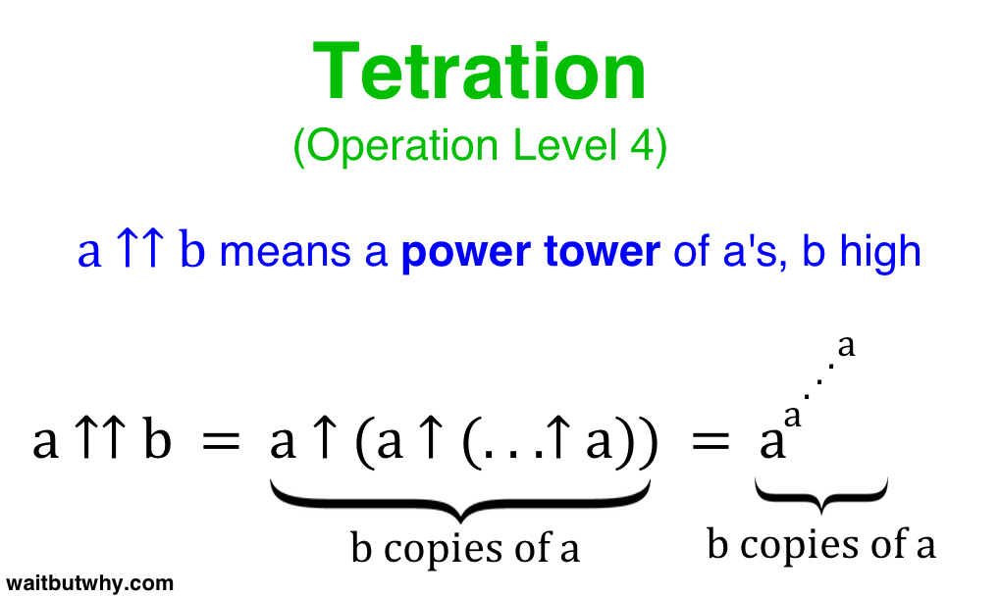
We’re about to move up another level, and this is about to become more complex, so before we move on, make sure you really understand Level 4 and what ↑↑ means—just remember that a ↑↑ b is a power tower of a’s, b high.
Operation Level 5 – Pentation (↑↑↑)
Pentation, or iterated tetration, bundles double arrow strings together into a single operation.
The pattern we’ve seen is each new level bundles a string of the previous level together by using a b term as the length of the string. For example:
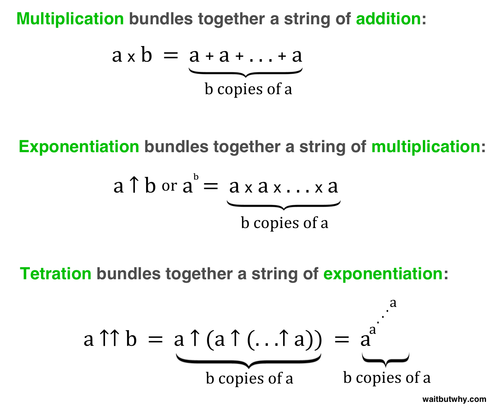
In each case, a is the base number and b is the length of the string being bundled.
So what does pentation bundle together? How can you have a string of power towers?
The answer is what I call a “power tower feeding frenzy”. Here’s how it works:
You have a string of power towers standing next to each other, in a particular order, all using the same base number. The thing that differs between them is the height of each tower. The first tower’s height is the same number as the base number. You process that tower down to its full expanded outcome, and that outcome becomes the height of the next tower. You then process that tower, and the outcome becomes the height of the next tower. And so on. Each tower’s outcome “feeds” into the next tower and becomes its height—hence the feeding frenzy. Here’s why this happens:
3 ↑↑↑ 4 means a string of (3 ↑↑ 3) operations, 4 long. So:
3 ↑↑↑ 4 = 3 ↑↑ (3 ↑↑ (3 ↑↑ 3))
Remember, when you see ↑↑ it means a single power tower that’s b high, so:
3 ↑↑↑ 4 = 3 ↑↑ (3 ↑↑ (3 ↑↑ 3)) = 3 ↑↑ (3 ↑↑ 333)
Now, you might remember from before that 333 = 327 = 7,625,597,484,987. So:
3 ↑↑↑ 4 = 3 ↑↑ (3 ↑↑ (3 ↑↑ 3)) = 3 ↑↑ (3 ↑↑ 333) = 3 ↑↑ (3 ↑↑ 7,625,597,484,987)
So the first tower of height 3 processed down into 7 trillion-ish. Now the next parentheses we’re dealing with is (3 ↑↑ 7,625,597,484,987), where the outcome of the first tower is the height of this second tower. And how high would that tower of 7 trillion-ish 3s be?
Well if each 3 is two centimeters high, which is about how big my written 3’s are, the tower would rise about 150 million kilometers high, which would touch the sun. Even if we used tiny, typed 2mm 3’s, our tower would reach the moon and back to the Earth and back to the moon forty times before finishing. If we wrote those tiny 3’s on the ground instead, the tower would wrap around the earth 400 times. Let’s call this tower the “sun tower,” because it stretches all the way to the sun. So what we have is:
3 ↑↑↑ 4 = 3 ↑↑ (3 ↑↑ (3 ↑↑ 3)) = 3 ↑↑ (3 ↑↑ 333) = 3 ↑↑ (3 ↑↑ 7,625,597,484,987) = 3 ↑↑ (sun tower)
This final 3 ↑↑ (sun tower) operation is a power tower of 3’s whose height is the number you get when you multiply out the entire sun tower (and this final tower we’re building won’t even come close to fitting in the observable universe). And we don’t get to our final value of 3 ↑↑↑ 4 until we multiply out this final tower.
So using ↑↑↑, or pentation, creates a power tower feeding frenzy, where as you go, each tower’s height begins to become incomprehensible, let alone the actual final value. Written generally:
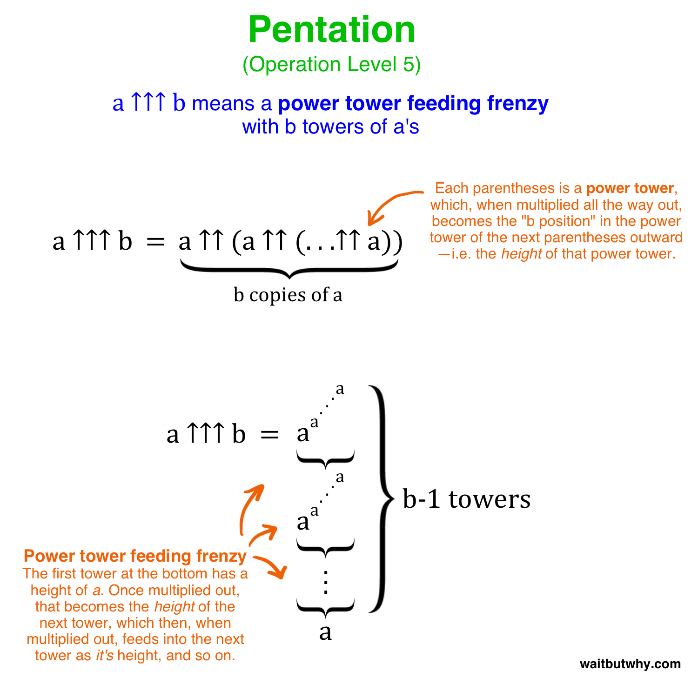
We’re gonna go up one more level—
Operation Level 6 – Hexation (↑↑↑↑)
So on Level 4, we’re dealing with a string of Level 3 exponents—a power tower. On Level 5, we’re dealing with a string of Level 4 power towers—a power tower feeding frenzy. On Level 6, aka hexation or iterated pentation, we’re dealing with a string of power tower feeding frenzies—what we’ll call a “power tower feeding frenzy psycho festival.” Here’s the basic idea:
A power tower feeding frenzy happens. The final number the frenzy produces becomes the number of towers in the next feeding frenzy. Then that frenzy happens and produces an even more ridiculous number, which then becomes the number of towers for the next frenzy. And so on.
3 ↑↑↑↑ 4 is a power tower feeding frenzy psycho festival, during which there are 3 total ↑↑↑ feeding frenzies, each one dictating the number of towers in the next one. So:
3 ↑↑↑↑ 4 = 3 ↑↑↑ (3 ↑↑↑ (3 ↑↑↑ 3))
Now remember from before that 3 ↑↑↑ 3 is what turns into the sun tower. So:
3 ↑↑↑↑ 4 = 3 ↑↑↑ (3 ↑↑↑ (3 ↑↑↑ 3)) = 3 ↑↑↑ (3 ↑↑↑ (sun tower))
Since ↑↑↑ means a power tower feeding frenzy, what we have here with 3 ↑↑↑ (sun tower) is a feeding frenzy with a multiplied-out-sun-tower number of towers. When that feeding finally finishes, the outcome becomes the number of towers in the final feeding frenzy. The psycho festival ends when that final feeding frenzy produces it’s final number. Here’s hexation explained generally:
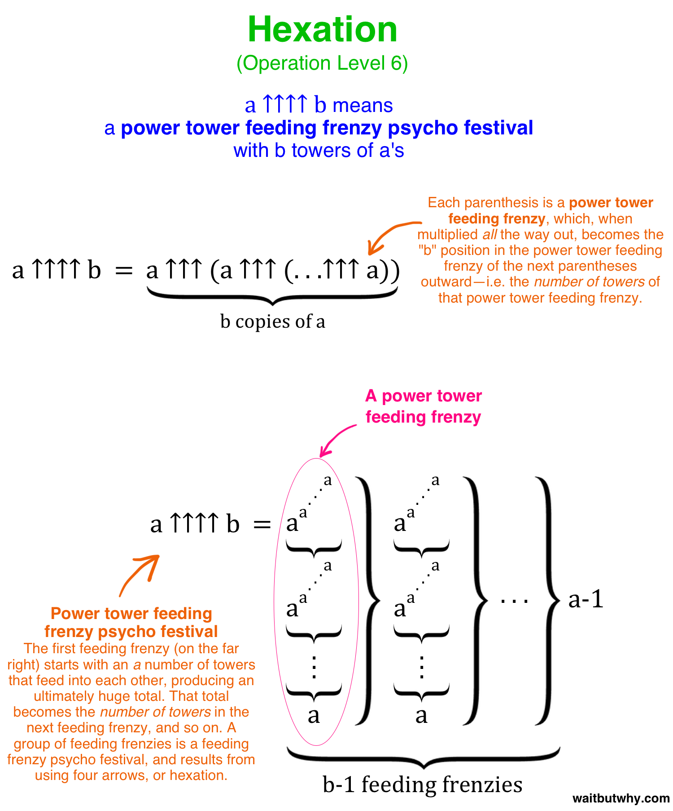
And that’s how the hyperoperation sequence works. You can keep increasing the arrows, and each arrow you add dramatically explodes the scope you’re dealing with. So far, we’ve gone through the first seven operations in the sequence, including the first four arrow levels:
↑ = power
↑↑ = power tower
↑↑↑ = power tower feeding frenzy
↑↑↑↑ = power tower feeding frenzy psycho festival
So now that we have the toolkit, let’s go through Graham’s number:
Graham’s number is going to be equal to a term called g64. We’ll get there. First, we need to start back with a number called g1, and then we’ll work our way up. So what’s g1?
g1 = 3 ↑↑↑↑ 3
Hexation. You get it. Kind of. So let’s go through it.
Since there are four arrows, it looks like we have a power tower feeding frenzy psycho festival on our hands. Here’s how it looks visually:
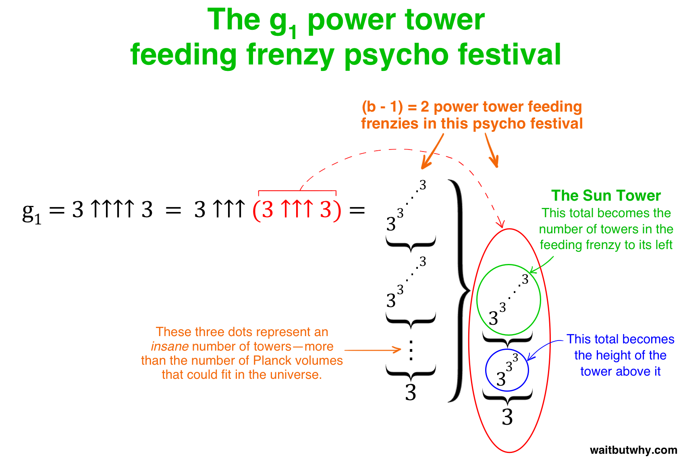
So g1 = 3 ↑↑↑↑ 3 = 3 ↑↑↑ (3 ↑↑↑ 3), and we have two feeding frenzies to worry about. Let’s deal with the first one (in red) first:
g1 = 3 ↑↑↑↑ 3 = 3 ↑↑↑ (3 ↑↑↑ 3) = 3 ↑↑↑ (3 ↑↑ (3 ↑↑ 3))
So this first feeding frenzy has two ↑↑ power towers. The first tower (in blue) is a straightforward little one because the value of b is only 3:
g1 = 3 ↑↑↑↑ 3 = 3 ↑↑↑ (3 ↑↑↑ 3) = 3 ↑↑↑ (3 ↑↑ (3 ↑↑ 3)) = 3 ↑↑↑ (3 ↑↑ 333)
And we’ve learned that 333 = 7,625,597,484,987, so:
g1 = 3 ↑↑↑↑ 3 = 3 ↑↑↑ (3 ↑↑↑ 3) = 3 ↑↑↑ (3 ↑↑ (3 ↑↑ 3)) = 3 ↑↑↑ (3 ↑↑ 333) = 3 ↑↑↑ (3 ↑↑ 7,625,597,484,987)
And we know that (3 ↑↑ 7,625,597,484,987) is our 150km-high sun tower:
g1 = 3 ↑↑↑↑ 3 = 3 ↑↑↑ (3 ↑↑↑ 3) = 3 ↑↑↑ (3 ↑↑ (3 ↑↑ 3)) = 3 ↑↑↑ (3 ↑↑ 333) = 3 ↑↑↑ (3 ↑↑ 7,625,597,484,987) = 3 ↑↑↑ (sun tower)
To clean it up:
g1 = 3 ↑↑↑↑ 3 = 3 ↑↑↑ (3 ↑↑↑ 3) = 3 ↑↑↑ (sun tower)
So the first of our two feeding frenzies has left us with an epically tall sun tower of 3’s to multiply down. Remember how earlier we showed how quickly a power tower escalated:
3 = 3
33 = 27
333 = 7,625,597,484,987
3333 = a 3.6 trillion-digit number, way bigger than a googol, that would wrap around the Earth a couple hundred times if you wrote it out
33333 = a number with a 3.6 trillion-digit exponent, way way bigger than a googolplex and a number you couldn’t come close to writing in the observable universe, let alone multiplying out
Pretty insane growth, right?
And that’s only the top few centimeters of the sun tower.
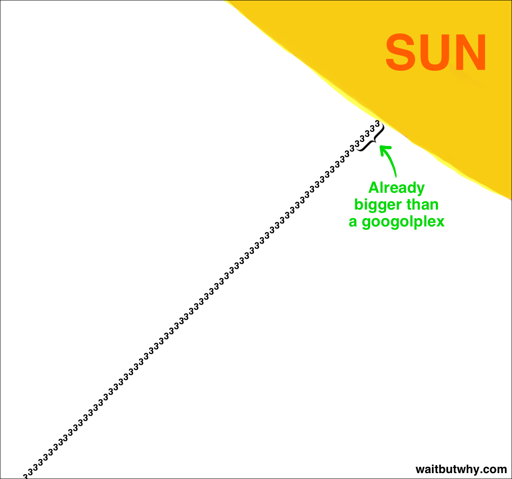
Once we get a meter down, the number is truly far, far, far bigger than we could ever fathom. And that’s a meter down.
The tower goes down 150 million kilometers.
Let’s call the final outcome of this multiplied-out sun tower INSANITY in all caps. We can’t comprehend even a few centimeters multiplied out, so 150 million km is gonna be called INSANITY and we’ll just live with it.
So back to where we were:
g1 = 3 ↑↑↑↑ 3 = 3 ↑↑↑ (3 ↑↑↑ 3) = 3 ↑↑↑ (sun tower)
And now we can replace the sun tower with the final number that it produces:
g1 = 3 ↑↑↑↑ 3 = 3 ↑↑↑ (3 ↑↑↑ 3) = 3 ↑↑↑ (sun tower) = 3 ↑↑↑ INSANITY
Alright, we’re ready for the second of our two feeding frenzies. And here’s the thing about this second feeding frenzy—
So you know how upset I just got about this whole INSANITY thing?
That was the outcome of a feeding frenzy with only two towers. The first little one multiplied out and fed into the second one and the outcome was INSANITY.
Now for this second feeding frenzy…
There are an INSANITY number of towers.
We’ll move on in a minute, and I’ll stop doing these dramatic one sentence paragraphs, I promise—but just absorb that for a second. INSANITY was so big there was no way to talk about it. Planck volumes in the universe is a joke. A googolplex is laughable. It’s too big to be part of my life. And that’s the number of towers in the second feeding frenzy.
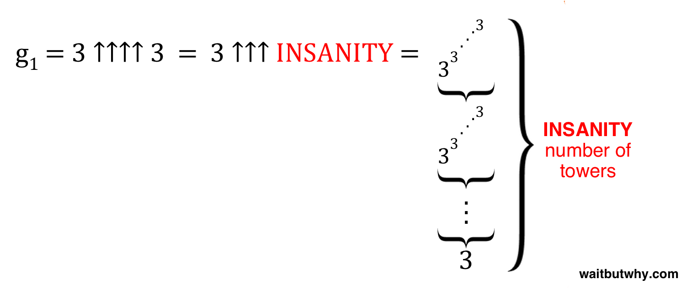
So we have an INSANITY number of towers, each one being multiplied allllllllll the way down to determine the height of the next one, until somehow, somewhere, at some point in a future universe, we multiply our final tower of this second feeding frenzy out…and that number—let’s call it NO I CAN’T EVEN—is the final outcome of the 3 ↑↑↑↑ 3 power tower feeding frenzy psycho festival.
That number—NO I CAN’T EVEN—is g1.
Now…
I want you to look at me, and I want you to listen to me.
We’re about to enter a whole new realm of craziness, and I’m gonna say some shit that’s not okay. Are you ready?
So g1 is 3 ↑↑↑↑ 3, aka NO I CAN’T EVEN.
The next step is we need to get to g2. Here’s how we get there:

Look closely at that drawing until you realize how not okay it is. Then let’s continue.
So yeah. We spent all day clawing our way up from one arrow to four, coping with the hardships each new operation level presented us with, absorbing the outrageous effect of adding each new arrow in. We went slowly and steadily and we ended up at NO I CAN’T EVEN.
Then Graham decides that for g2, he’ll just do the same thing as he did in g1, except instead of four arrows, there would be NO I CAN’T EVEN arrows.
Arrows. The entire g1 now feeds into g2 as its number of arrows.
Just going to a fifth arrow would have made my head explode, but the number of arrows in g2 isn’t five—it’s far, far more than the number of Planck volumes that could fit in the universe, far, far more than a googolplex, and far, far more than INSANITY. And that’s the number of arrows. That’s the level of operation g2 uses. Graham’s number iterates on the concept of iterations. It bundles the hyperoperation sequence itself.
Of course, we won’t even pretend to do anything with that information other than laugh at it, stare at it, and be aroused by it. There’s nothing we could possibly say about g2, so we won’t.
And how about g3?
You guessed it—once the laughable g2 is all multiplied out, that becomes the number of arrows in g3.
And then this happens again for g4. And again for g5. And again and again and again, all the way up to g64.
g64 is Graham’s number.
All together, it looks like this:
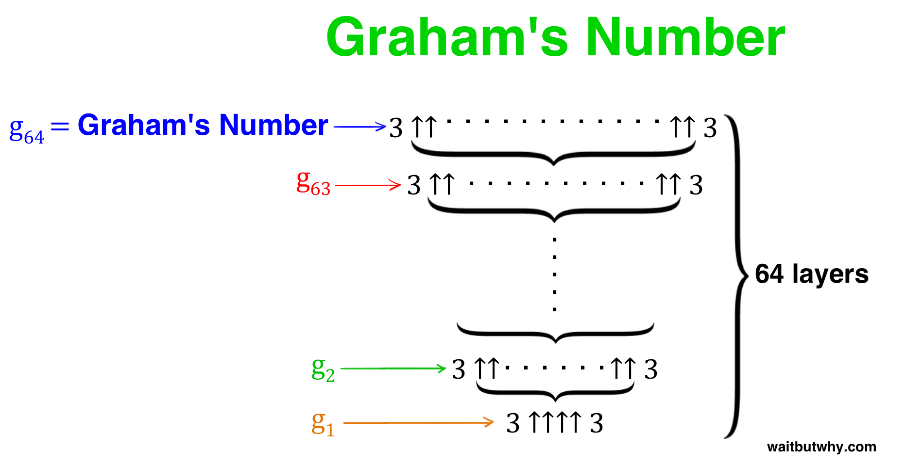
So there you go. A new thing to have nightmares about.
________
P.S. Writing this post made me much less likely to pick “infinity” as my answer to this week’s dinner table question. Imagine living a Graham’s number amount of years.8 Even if hypothetically, conditions stayed the same in the universe, in the solar system, and on Earth forever, there is no way the human brain is built to withstand spans of time like that. I’m horrified thinking about it. I think it would be the gravest of grave errors to punch infinity into the calculator—and this is from someone who’s openly terrified of death. Weirdly, thinking about Graham’s number has actually made me feel a little bit calmer about death, because it’s a reminder that I don’t actually want to live forever—I do want to die at some point, because remaining conscious for eternity is even scarier. Yes, death comes way, way too quickly, but the thought “I do want to die at some point” is a very novel concept to me and actually makes me more relaxed than usual about our mortality.
P.P.S If you must, another Wait But Why post on large numbers.
{kind=link}
{kind=link}
{kind=link}